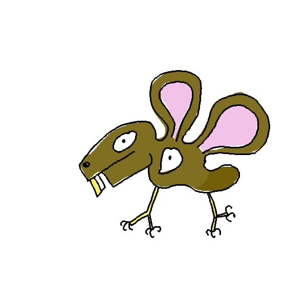

Pierre Martinez
Algebraic Geometry PhD.

Education
- Université de Bretagne Occidentale, Brest (France)
Research Support Assistant (CNRS), September 2024 – August 2025
- Université de Bretagne Occidentale, Brest (France)
PhD in Mathematics, supervised by Johannes Huisman
"Bigraded arithmetic cohomology of real closed spaces"
September 2021 – June 2025
- Université de Rennes 1, Rennes (France)
Master’s Degree (M2) in Fundamental Mathematics, Algebra and Geometry, 2020 – 2021
- Université de Rennes 1, Rennes (France)
Master’s Degree (M2), Preparation for the Agrégation, 2019 – 2020
- Université de Rennes 1, Rennes (France)
Master’s Degree (M1) in Fundamental Mathematics, 2018 – 2019
- Université de Rennes 1, Rennes (France)
Bachelor’s Degree in Mathematics, 2015 – 2018
Teaching
- Euclidean Spaces and Conics (2nd-year undergraduate)
Teaching Assistant, 32 hours — January 2024 – May 2024
- Commutative Algebra (3rd-year undergraduate)
Teaching Assistant, 32 hours — September 2023 – December 2023
- Euclidean Spaces and Conics (2nd-year undergraduate)
Teaching Assistant, 32 hours — January 2023 – May 2023
- General Mathematics (1st-year undergraduate)
Teaching Assistant, 32 hours — September 2022 – December 2022
- Master’s Project Supervision (M1)
Thesis: The Serre–Swan theorem in algebraic geometry
February 2022 – May 2022
Popularization of Mathematics
- Management of the LMBA mathematics outreach webpage (2024–2025).
- Leader of a MATh.en.JEANS workshop on Ramsey theory (March–May 2025).
- Organization and leadership of mathematics workshops in several French high schools (2025).
- Group theory course during Mathematics Week, Lycée Sainte-Marie de Hann, Dakar (March 2025).
- Participation in the Science Festival mathematics booth, Brest (October 2024).
Talks, Working Groups, and Posters
- Invited talks and posters on bigraded cohomology and real algebraic geometry (2021–2025).
- Participant and organizer of several ANR HQDIAG working groups.
Conferences
- Participation in international and national conferences in real algebraic geometry and motivic homotopy theory (2021–2025).
Preprints
- An algebraic variant of the bigraded cohomology of real spaces (in preparation).
- Bigraded cohomology of algebraic varieties over real closed fields (in preparation).
Mathematical Interests
Real algebraic geometry; topology and cohomology of real and complex points of algebraic varieties;
characteristic classes; equivariant and motivic cohomology.